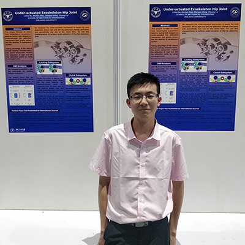
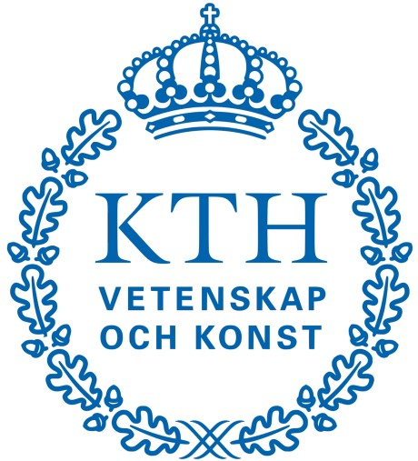
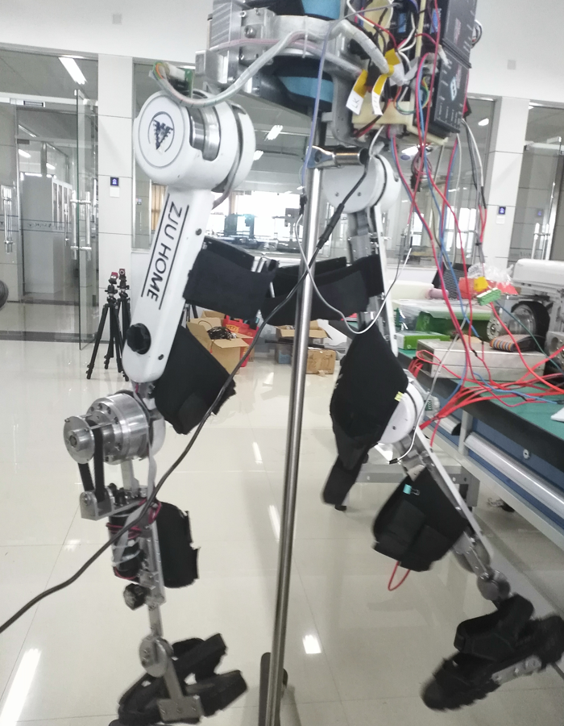

|
 |
LinghuiPHD Candidate@ME, KTH Royal Institute of Technology |
Biography
I am currently a PHD student at KTH Moveability Lab, KTH Royal Institute of Technology. My background is Mechatronics. Currently, I am working on active assistive exoskeletons project for person with weak hip abductors. My research interests include Exoskeleton, Rehabilitation, Wearable Sensor, Gait Analysis, Human Intention Recognition.
Education
|
 |
PhD
KTH Royal Institute of Technology |
Sep. 2022 - Jun. 2026(*) |
|
MA.Eng
Zhejiang University |
Sep. 2019 - Jun. 2022 |
|
|
B. Eng.
Zhejiang University |
Sep. 2015 - Jun. 2019 |
Experience
|
R&D Intern
BONDIOLI & PAVESI Hydraulic and Mechanical Components |
Jul. 2018 - Sep. 2018 Hangzhou, China |
|
|
*: The expected schedule. |
Publications
Journal Articles
-
Machine-learning-based children’s pathological gait classification with low-cost gait-recognition system
Linghui Xu, Jiansong Chen, Fei Wang, Yuting Chen, Wei Yang#, Canjun Yang
Biomedical Engineering Online (Q3), 2021
More
-
An Omnidirectional Encircled Deployable Polyhedral Gripper for Contactless Delicate Midwater Creatures Sampling
Qingchao Xia, Linghui Xu, Chen Liu, Yue Yang, Yuting Chen#, Sheng Zhang#, Canjun Yang
Advanced Engineering Materials (Q2), 2022 -
Current developments of robotic hip exoskeleton toward sensing, decision, and actuation: A review
Canjun Yang, Linfan Yu, Linghui Xu, Zehao Yan, Dongming Hu, Sheng Zhao, Wei Yang#
Wearable Technologies , 2022 -
Hybrid oscillator-based no-delay hip exoskeleton control for free walking assistance
Wei Yang, Linghui Xu#, Linfan Yu, Yuting Chen, Zehao Yan, Canjun Yang
Industrial Robot (Q2), 2021 -
Current Development on Origami/Kirigami‐Inspired Structure of Creased Patterns toward Robotics
Chao Ai, Yuting Chen, Linghui Xu, Hong Li, Chen Liu, Fangfang Shang, Qingchao Xia, Sheng Zhang#
Advanced Engineering Materials (Q2), 2021 -
Real-time Assistance Control of Hip Exoskeleton Based on Motion Prediction
Linghui Xu, Wei Yang, Canjun Yang, Jiyu Zhang, Tian Wang
EI: Robot, 2021 -
Design of flexible knee-joint protection exoskeleton and walking assistance method
Canjun Yang, Zhenzhe Peng, Linghui Xu, Wei Yang
EI: Journal of Zhejiang University: Engineering Science, 2021 -
The Design of Exoskeleton Underactuated Hip Joint Based on Walking Balance Stability
Jie Hu，Linghui Xu，Wei Yang，Xiangming Zheng
EI: Software Guide， 2020 -
Following Assistance Control of Walking Assist Exoskeleton Based on Oscillator
Wei Yang, Canjun Yang, ZhangYi Ma, Hansong Wang, Linghui Xu
EI: Journal of Mechanical & Electrical Engineering, 2019
Conference Papers
-
Improving Walking Assist Hip Exoskeleton Torque Efficiency with Decoupling Mechanism
Linfan Yu, Zehao Yan, Linghui Xu, Wei Yang, Canjun Yang
International Symposium on Autonomous Systems (ISAS), 2022
More
-
Adaptive torque control of hip exoskeleton for walking assist based on motion comparison method and phase oscillator method
Wei Yang, Linghui Xu, Canjun Yang
Intelligent Rehabilitation and Human-machine Engineering Conference (IRHE) , 2019 -
Simulation of exoskeleton ZMP during walking for balance control
Wei Yang, Canjun Yang#, Yanhu Chen, Linghui Xu
International Conference on Mechanical and Intelligent Manufacturing Technologies (ICMIMT), 2018
|
|
#: Corresponding author. |
Patents and Copyright
Patents
-
Gait correction system and method for regulating and controlling upper limb swing
Yang W, Yu L, Yan Z, Linghui Xu, Yang C
CN114712170A, 2022 -
Walking aid continuous gait phase estimation control method based on self-adaptive oscillator
Linghui Xu, Yang W, Chen Y, Yu L, Yan Z, Xia Q, Yang C, Jia Li, Qichao Zhao
CN114170679A, 2022 -
Wearable walking assistance robot and hybrid assistance control method thereof(*)
Yang W, Linghui Xu, Cao B, Peng Z, Yang C
CN112060055B, 2021
More
-
System and method for identifying abnormal gait of child based on plantar pressure array detection
Linghui Xu, Yang W, Yang C, Yu L
CN112244819A, 2021 -
Human-in-loop intelligent training load curve optimization algorithm based on evaluation indexes
Yang W, Linghui Xu, Yang C, Cao B, Yu L, Peng Z
CN112364564A, 2021 -
Lower limb exoskeleton system with actively adjustable leg rod length and control method thereof (*)
Yang W, Linghui Xu, Cao B, Peng Z, Yang C
CN111805511A, 2020 -
Intelligent fitness system and adjustable constant-resistance output device
Yang W, Linghui Xu, Luo Q, Wang F
CN110812777A, 2020 -
Comprehensive body-building device capable of stepless regulating resistance
Yang W, Linghui Xu, Yang C, Cao B, Yu L, Peng Z
CN112386858A, 2020 -
Intelligent fitness load control system based on online self-adaptive prediction neural network
Yang W, Linghui Xu, Yang C, Cao B, Yu L, Peng Z
CN112370746A, 2021 -
Device capable of realizing rehabilitation by linkage of cervical vertebra and lumbar vertebra (*)
Yang W, Linghui Xu, Yang C, Cao B, Yu L, Peng Z
CN112354147A, 2021 -
Wearable mountain-climbing assistance robot and assistance control method thereof
Yang W, Liu X, Gu H, Linghui Xu, Yang Y, Yu L
CN112675504A, 2021 -
Soft robot and sound wave driving method thereof
Xia Q, Chen Y, Zhang S, Yang C, Liu C, Shang F, Linghui Xu, Yang W
CN113119075A, 2021 -
High-sealing type medical mask
Yang W, Zhang S, Yang C, Jin B, Linghui Xu, Yu L
CN112471641A, 2021 -
A security monitoring system and method
Zhang S, Chen Y, Xia Q, Linghui Xu, Shang F, Liu C
CN113518204A, 2021 -
Old people falling risk assessment method and system
Yang C, Linghui Xu, Ma Z, Wu X, Yang W
CN111243229A, 2020 -
Intelligent fitness system and adjustable constant-resistance output device (*)
Yang W, Linghui Xu, Luo Q, Wang F
CN212038768U, 2020 -
Lower limb rehabilitation training exoskeleton system and its walking control method and hip joint structure (*)
Yang C, Yang W, Linghui Xu, Wang H, Wei Q, Ma Z
CN108392378B, 2018
|
|
(*): Granted patent. |
Honors and Awards
- Graduate of Merits, Zhejiang University, 2021
More
- Shandong Lingong Scholarship for Graduate Students, 2021
- Graduate Students Outstanding Scholarship, Zhejiang University, 2019
- AIIA Cup Artificial Intelligence Tour - Medical Artificial Intelligence Competition Merit Award, 2018
- Third-class Scholarship for Outstanding Students, Zhejiang University, 2016[Cert.]
- Third-class Scholarship for Outstanding Merits, Zhejiang University, 2016[Cert.]
Academic Exchanges
- Zhejiang University - Kyoto University, Kyoto, Japan (online), 2020
Projects

EPOS4/EPOS2 CanOpen Controller EPOS2/4 CanOpen Controller project is the implementation of CanOpen with STM32f103 to communicate with EPOS4, EPOS2 or even any other system carrying CanOpen protocol. Particularly, this project can help you control portable or static multiple-motor system in realtime and low cost based on EPOS motor contorler. |
 Rehabilitation Exoskeleton project involves in designing a lower-limb rehabilitation exoskeleton system for people with walking disorder. It has six active degree of freedoms at hip and knee joints, and three passive degree of freedoms at ankle joints. The system uses a simple STM32 MCU board as main controller, EPOS4 as motor controllers, and maxon motors as actuators. The exoskeleton combines real-time trajectory planning and motor impedence control technologies. It can regulate the individual rehabilitation trajectory and motor siffness to maxmium the effect of its rehabilitation results. |

This project involves in designing a portable hip exoskeleton system for reducing human effort during walking. It has two active degree of freedoms at hip joints, and 6 passive degree of freedoms at hip joints and hip bandages. The system implemented real-time human motion recognition methods and Human-in-loop optimization technology through percept human kinematics signals in realtime using a simple STM32 MCU. It can precisely recognize human locomotion phase in multiply terrains and provide individual optimial assistive torque. |

This project involves in a low-cost pathological gait-recognition system (PGRS) for children. PGRS can monitor the gait pattern of a child and recognize pathological gaits which will lead to terrible diseases if left unattended, such as osteoarthritis or scoliosis. Consequently, proper therapeutic measures can be recommended to avoid the terrible consequence. |